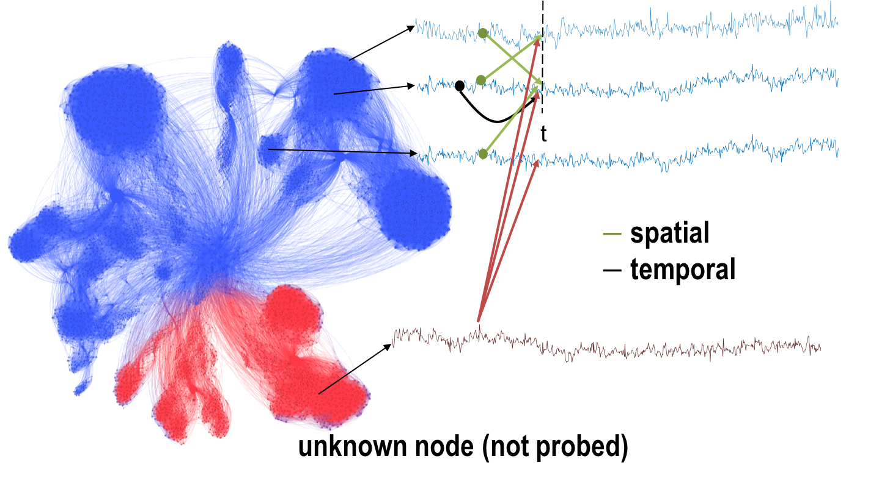
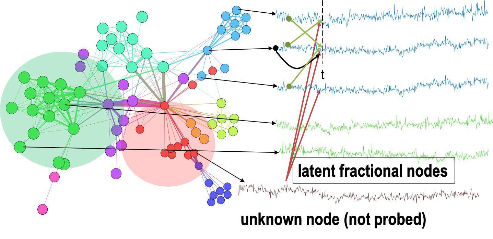

|  |
The theme of this project lies in answering a big and interesting question of incorporating unknown artifact contribution towards Non-Markovian dynamics. Numerous real world systems, for example, brain, physiological signals, social networks, gene-regulatory networks etc. can be modeled accurately with fractional dynamics by including long-range memory and spatial correlations. However, the assumption of complete knowledge of the network may not hold in most of the experimental situations due to limited probing resources. The inclusion of unknown unknowns aims to answer this limitation by probabilistically adding the hidden effects in the observed data. The ongoing work is detailed in the following publications.
Dealing with unknown unknowns: Compact accurate modeling of brain EEG signals using fractional dynamics
Abstract: This paper focuses on analysis and design of timevarying
complex networks having fractional order dynamics.
These systems are key in modeling the complex dynamical
processes arising in several natural and man made systems.
Notably, examples include neurophysiological signals such as
electroencephalogram (EEG) that captures the variation in
potential fields, and blood oxygenation level dependent (BOLD)
signal, which serves as a proxy for neuronal activity. Notwithstanding,
the complex networks originated by locally measuring
EEG and BOLD are often treated as isolated networks and
do not capture the dependency from external stimuli, e.g.,
originated in subcortical structures such as the thalamus and
the brain stem. Therefore, we propose a paradigm-shift towards
the analysis of such complex networks under unknown unknowns
(i.e., excitations). Consequently, the main contributions
of the present paper are threefold: (i) we present an alternating
scheme that enables to determine the best estimate of the model
parameters and unknown stimuli; (ii) we provide necessary
and sufficient conditions to ensure that it is possible to retrieve
the state and unknown stimuli; and (iii) upon these conditions
we determine a small subset of variables that need to be
measured to ensure that both state and input can be recovered,
while establishing sub-optimality guarantees with respect to the
smallest possible subset. Finally, we present several pedagogical
examples of the main results using real data collected from an
EEG wearable device.
[paper] [code]
Learning latent Fractional dynamics with Unknown Unknowns
|  |
Abstract: Despite significant effort in understanding complex
systems (CS), we lack a theory for modeling, inference,
analysis and efficient control of time-varying complex networks
(TVCNs) in uncertain environments. From brain activity dynamics
to microbiome, and even chromatin interactions within
the genome architecture, many such TVCNs exhibits a pronounced
spatio-temporal fractality. Moreover, for many TVCNs
only limited information (e.g., few variables) is accessible for
modeling, which hampers the capabilities of analytical tools to
uncover the true degrees of freedom and infer the CS model,
the hidden states and their parameters. Another fundamental
limitation is that of understanding and unveiling of unknown
drivers of the dynamics that could sporadically excite the
network in ways that straightforward modeling does not work
due to our inability to model non-stationary processes. Towards
addressing these challenges, in this paper, we consider the
problem of learning the fractional dynamical complex networks
under unknown unknowns (i.e., hidden drivers) and partial
observability (i.e., only partial data is available). More precisely,
we consider a generalized modeling approach of TVCNs
consisting of discrete-time fractional dynamical equations and
propose an iterative framework to determine the network
parameterization and predict the state of the system. We
showcase the performance of the proposed framework in the
context of task classification using real electroencephalogram data.
[paper] [code]